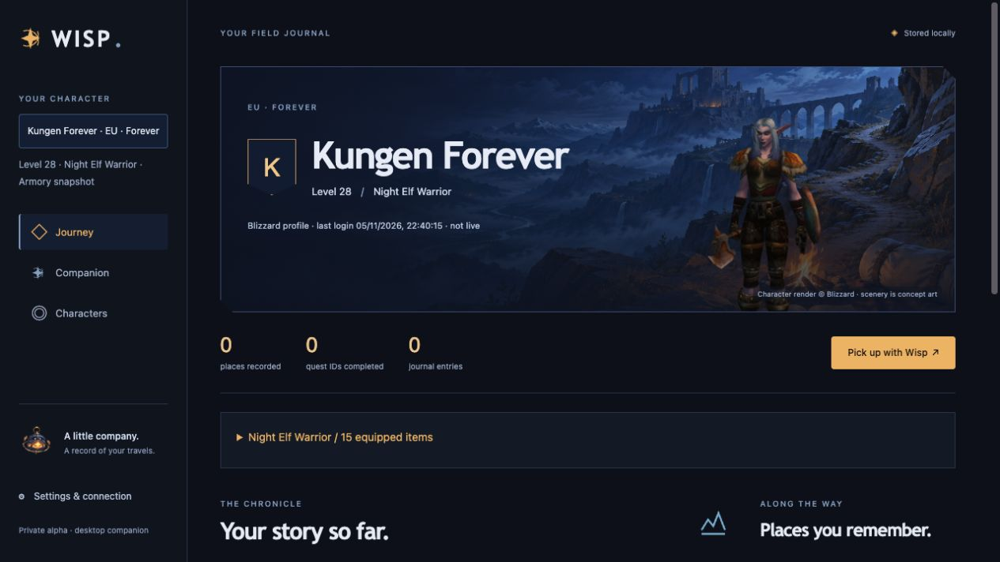
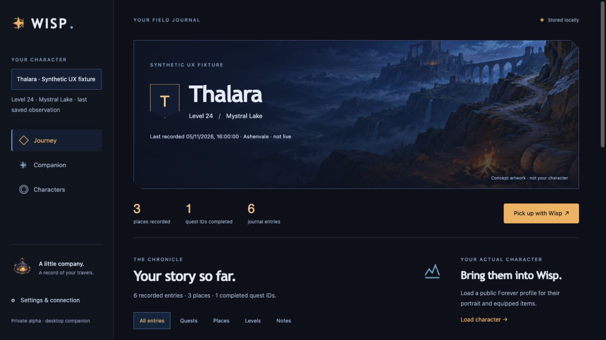
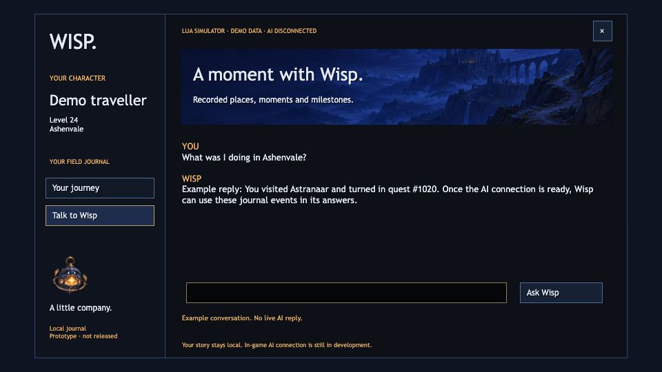
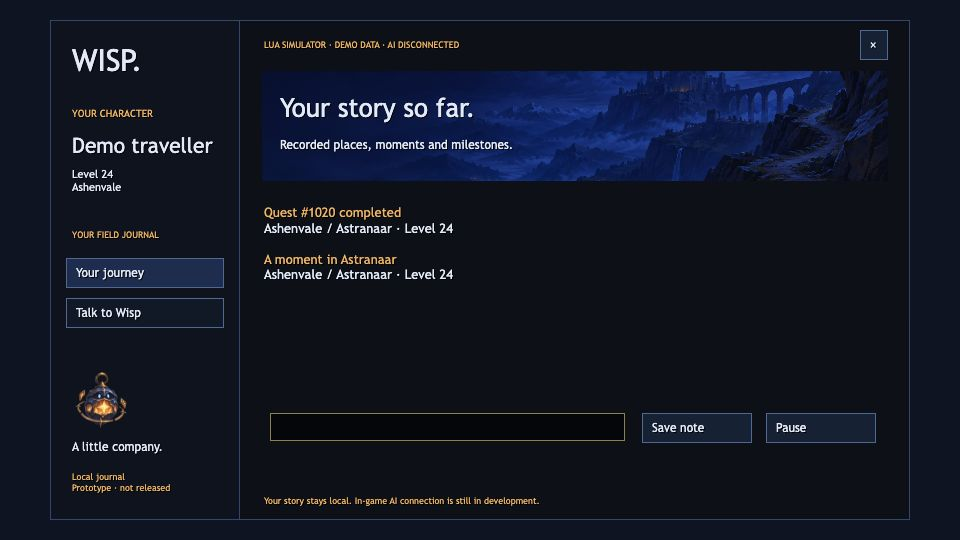

For WoW Forever
Your character
has a history.
Keep track of where you’ve been.
Ask Jornia what comes next.
Concept artwork · not a game screenshot
Jornia 0.8.0 desktop alpha. The experimental Mac bridge has delivered live quest-log answers in WoW; it is not included in these downloads.
Desktop companion
Your character, in Jornia.
Load the official portrait and equipped items from Blizzard. Switch characters without mixing their journals.

Available now
Start with a journal.
A dated record of places, quests and level-ups.
Keep notes for the next session, then ask Jornia.

Stored on your PC.
A separate journal for each character. Pause, export or delete it.
You choose what to send.
Review journal excerpts before sharing them with the AI.
Saved history.
The companion imports events when WoW saves, usually at logout or /reload.
In development
In your game.
Chat and your character’s journal, in one addon.
The companion handles the connection in the background.


Rendered from Lua in a simulator. These older simulator images illustrate the UI. The Mac experimental transport now delivers real AI replies in Forever; it is not bundled below.
Private alpha / 0.8.0
Try Jornia.
Character portraits, local journeys and questions about your saved character.
Review any journal or equipment context before sharing it with AI.
You’ll need an invite code for AI access.
- 01
Unzip. On Windows, run
Start-Jornia.cmd. - 02
Enter your invite code in the AI connection settings.
- 03
Connect your WoW folder to discover its characters, or try the demo. Follow START-HERE to install the addon.
Unsigned Windows and Mac apps. Windows is cross-built; native Windows chat is not validated. Mac notarization is pending. World data is incomplete. No separate database or developer tools required.
Can I chat inside WoW yet?
The Mac experimental bridge has been tested with real quest objectives and AI replies during play. These desktop ZIPs do not include that bridge. Native Windows chat is not yet validated.
What stays local?
Your character journal, conversation history and cached profiles. AI questions and world context are processed by the Jornia server and Berget. Journal excerpts are sent only when you choose to share them for a question. A separate, approved Armory lookup sends the public name and region to Jornia and Blizzard; portraits load from Blizzard. Jornia does not encrypt its local database.
Is it live?
The addon records events while you play. The companion receives them after WoW saves its journal file, usually at logout or /reload. It cannot recover adventures that Jornia never recorded. The local journal works offline; AI needs a connection.
What does the invite include?
No Jornia account. Initial access lasts 30 days, with up to 50 server requests per UTC day, shared by questions and Armory lookups. Future pricing is undecided. Updates are downloaded manually as new versioned ZIPs.